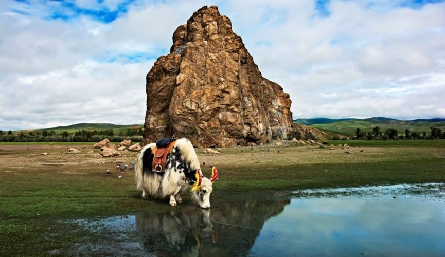

霍尔戈火山 Khorgo
火山口与熔岩地貌
霍尔戈给中部线路加入火山口、熔岩原和完全不同的地形。
常与白湖连成一日或两日。
中部
绿色河谷、火山地貌、河边传说与山地温泉，使后杭爱成为内容最完整的中部旅行区之一。
火山口与熔岩地貌
霍尔戈给中部线路加入火山口、熔岩原和完全不同的地形。
常与白湖连成一日或两日。

河边巨石与传说
路边即可抵达的标志巨石，常作为后杭爱途中的文化停点。
适合插在温泉或湖区途中。

山地热泉与放松停留
长途越野后，温泉是中部线路最受欢迎的放松一晚。
5 日或 7 日杭爱线几乎都会安排。